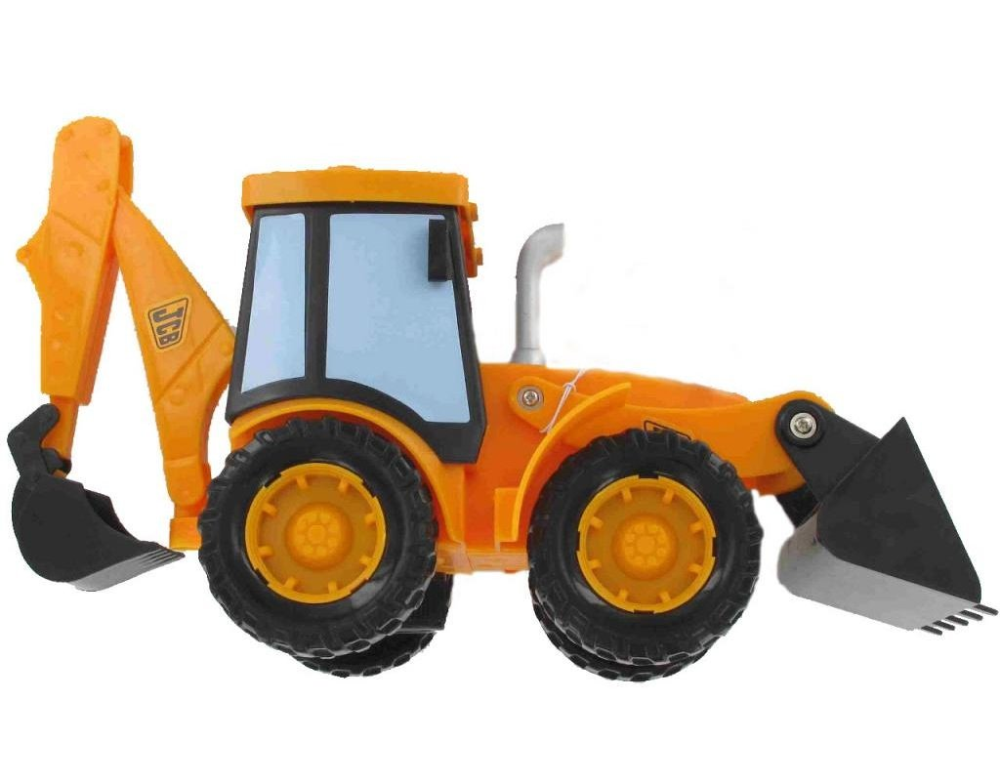
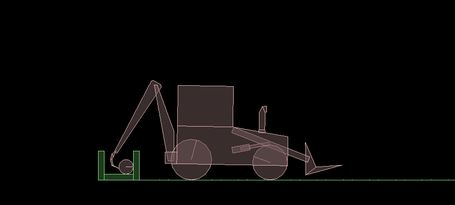
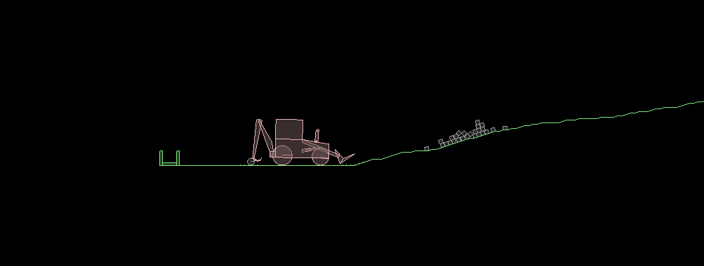

Project: JCB Digger
We are doing JCB Digger as the complex machine for our CS296 project. The initial design for the complex machine is here, which was made as a part of the first assignment.
We have tried to follow the original design as close as possible, though we have wheels in our simulation and added a digger at the front. The final design looks more like a digger. We tried the final project to look more like a physical digger like this.
We have used Box2D to simulate the Digger in testbed. All parts in the Digger are defined in dominos_t class. All parts are joined together using various joints like revolute joints, distance joints, wheel joints and weld joints to give the digger the required behaviour.
 We analysed our simulation by plotting avg. times for our simulation against number of iterations using matplotlib and tried to explain the graph's behaviour by including the Graphics. The detailed report can be found here.
References
| Members of the project | ||